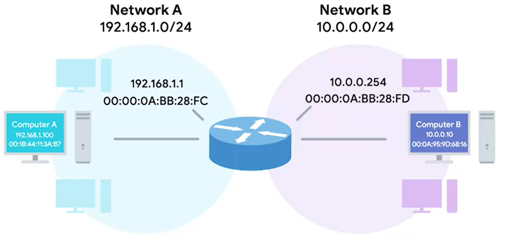

Routers- a network device that forwards traffic depending on the destination address of that traffic.

the router has a different ip in each network
routing tables have 4 columns-
1. Destination network 2. Next hop 3. Total hops 4. Interface
IP, the next router to keep track of which interface to forward trafic to
subnet mask, that should recieve data how far away the destination is.
subnet ID and if its the shortest way